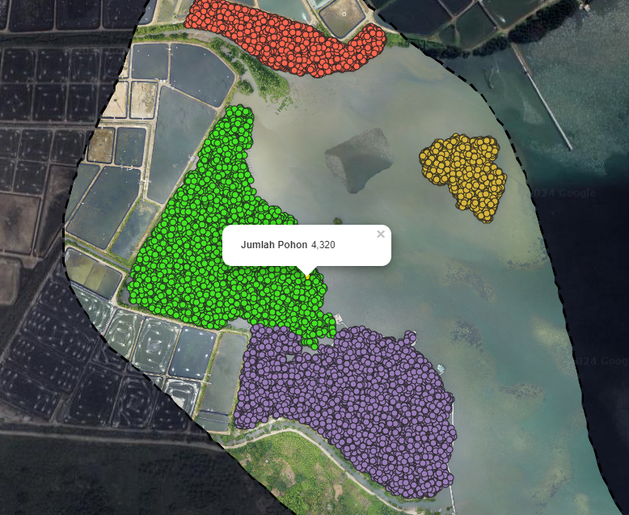
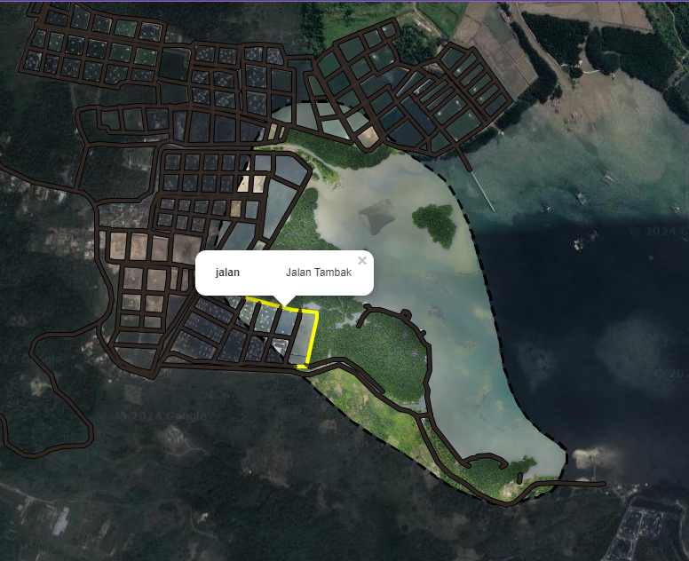
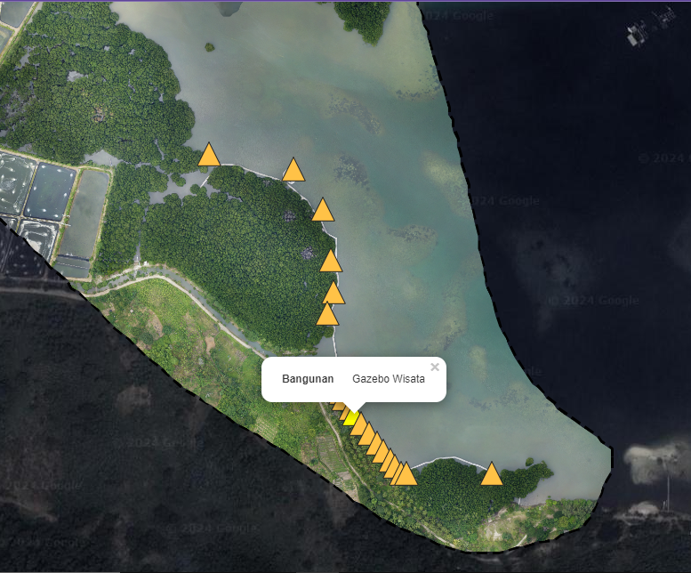
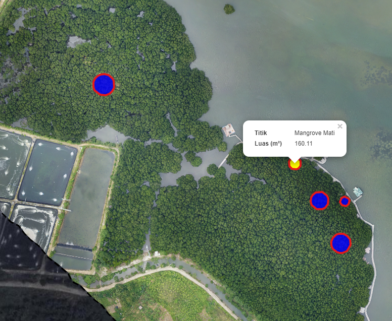
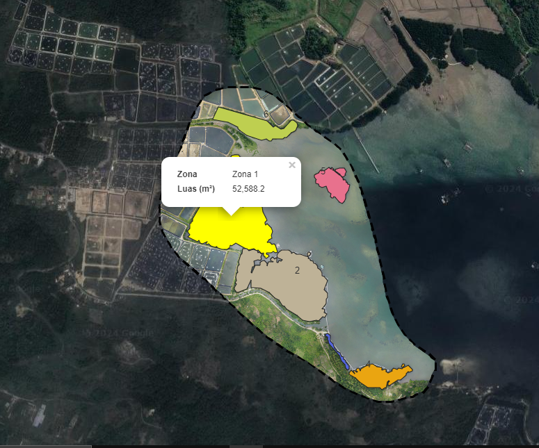

Beranda
Peta
Tentang
Kontak
Peta
GIS MANGROVE PETENGORAN
Klik untuk lihat versi full layar
Layer GIS Mangrove Petengoran Desa Gebang
Layer Base Map
Layer Jumlah Pohon

Layer Kerapatan Mangrove
Layer Jalan

Layer Bangunan

Layer Mangrove Mati

Layer Zona Mangrove

×